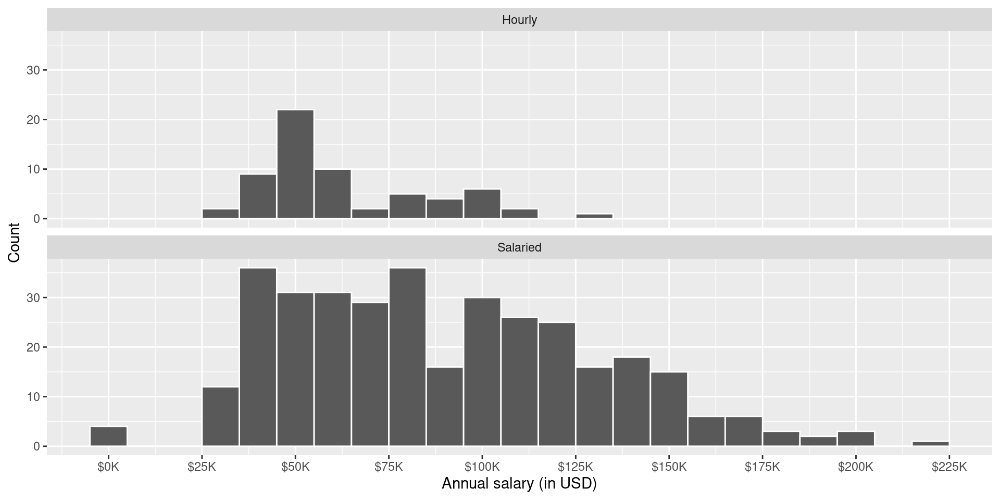
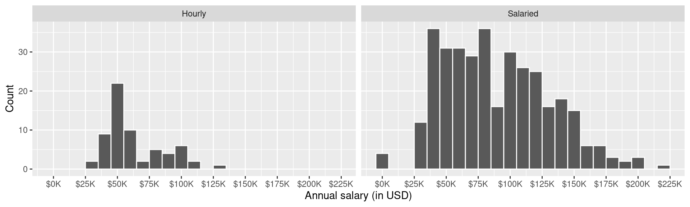
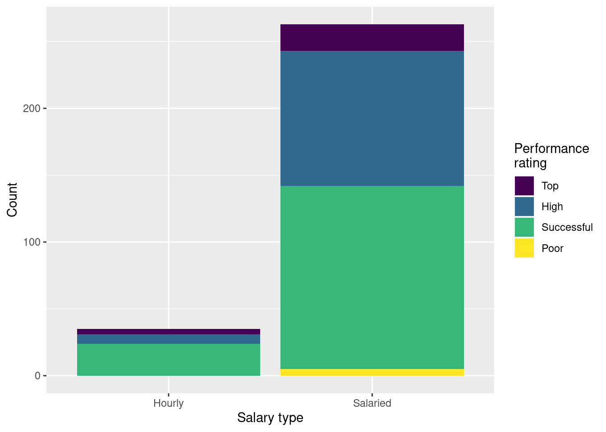
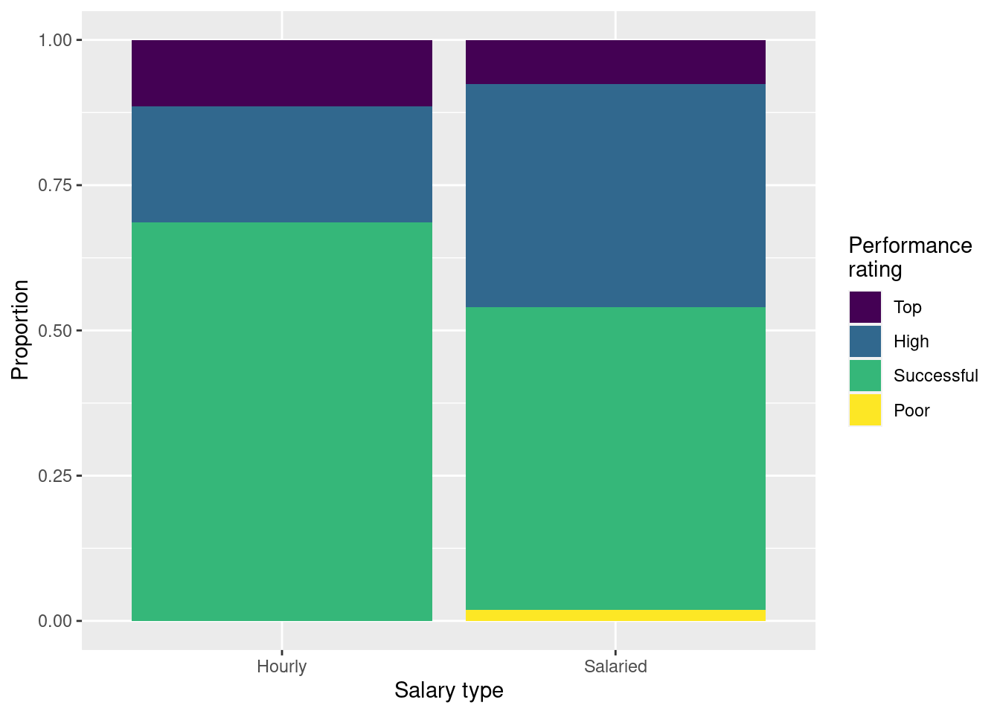
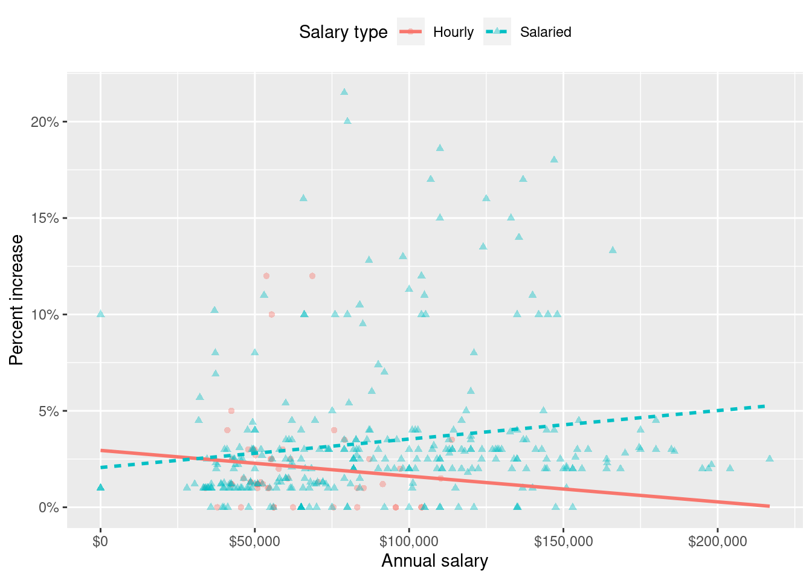
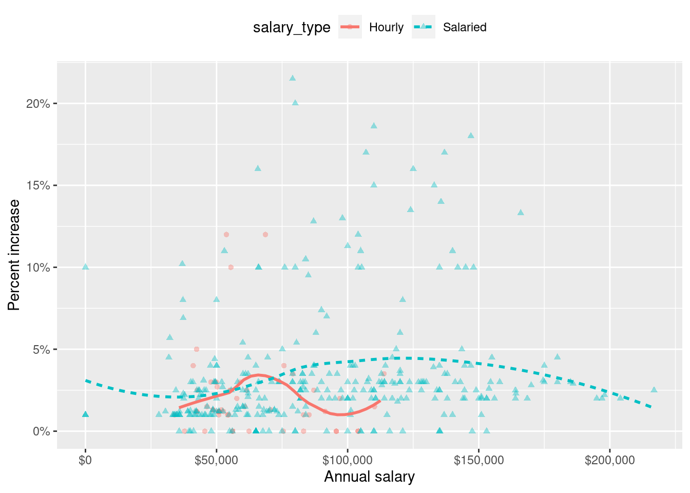
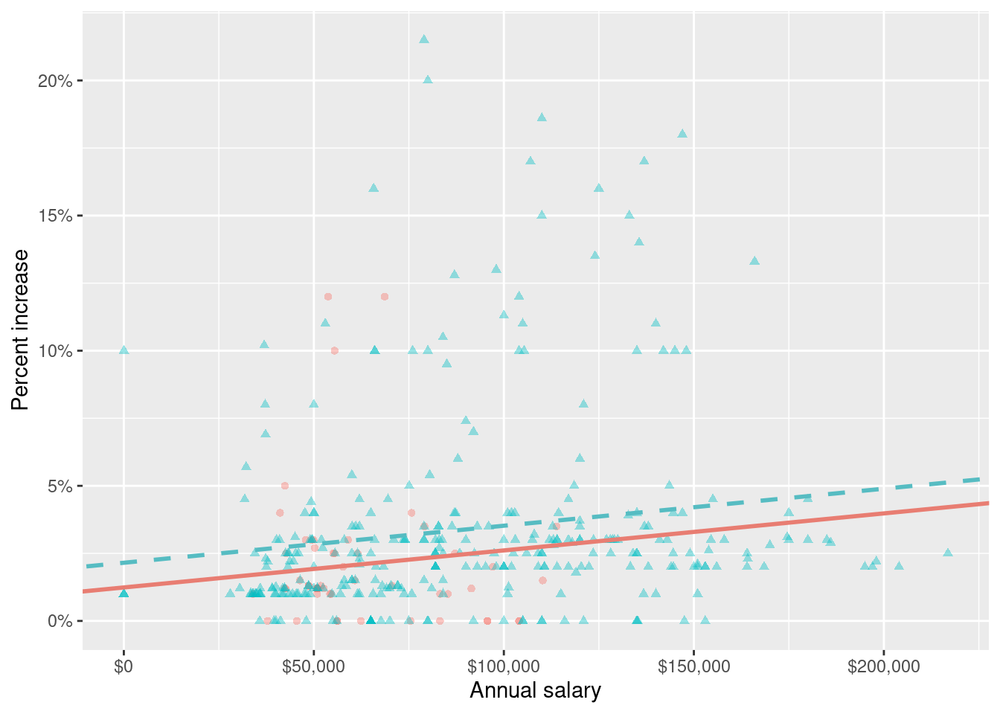
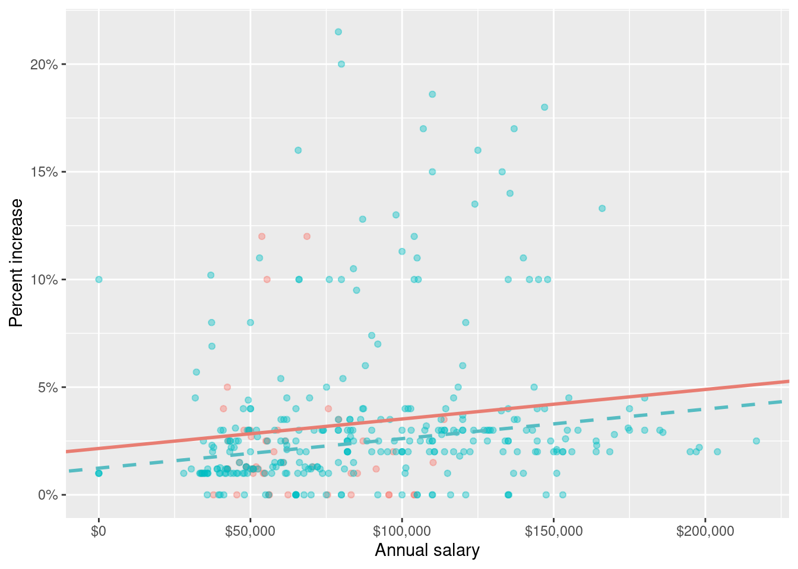

# A tibble: 409 × 4
percent_incr salary_type annual_salary performance_rating
<dbl> <chr> <dbl> <chr>
1 1 Salaried 1 High
2 1 Salaried 1 Successful
3 1 Salaried 1 High
4 1 Hourly 33987. Successful
5 NA Hourly 34798. High
6 NA Hourly 35360 <NA>
7 NA Hourly 37440 <NA>
8 0 Hourly 37814. <NA>
9 4 Hourly 41101. Top
10 1.2 Hourly 42328 <NA>
# ℹ 399 more rowsExam 1 Review
In 2020, employees of Blizzard Entertainment circulated a spreadsheet to anonymously share salaries and recent pay increases amidst rising tension in the video game industry over wage disparities and executive compensation. (Source: Blizzard Workers Share Salaries in Revolt Over Pay)
The name of the data frame used for this analysis is blizzard_salary and the relevant variables are:
percent_incr: Raise given in July 2020, as percent increase with values ranging from 1 (1% increase) to 21.5 (21.5% increase)salary_type: Type of salary, with levelsHourlyandSalariedannual_salary: Annual salary, in USD, with values ranging from $50,939 to $216,856.performance_rating: Most recent review performance rating, with levelsPoor,Successful,High, andTop. ThePoorlevel is the lowest rating and theToplevel is the highest rating.
The top six rows of blizzard_salary are shown below:
Question 1
How rows observations are there in the blizzard_salary dataset and what does each row represent?
There are 409 rows in the
blizzard_salarydataset. Each row represents a Blizzard Entertainment worker who filled out the spreadsheet.
Question 2
Figure 1 and Figure 2 show the distributions of annual salaries of hourly and salaried workers. The two figures show the same data, with the facets organized across rows and across columns. Which of the two figures is better for comparing the median annual salaries of hourly and salaried workers. Explain your reasoning.
::: {#fig-blizzard-hist}


Distribution of annual salaries of Blizzard employees
a - Figure 1 - A shared x-axis makes it easier to compare summary statistics for the variable on the x-axis.
Question 3
Suppose your teammate wrote the following code as part of their analysis of the data.
They then printed out the results shown below. Unfortunately one of the number got erased from the printout, it’s indicated with _____ below.
# A tibble: 2 × 3
salary_type mean_annual_salary median_annual_salary
<chr> <dbl> <dbl>
1 Hourly 63003. 54246.
2 Salaried 90183. _____Which of the following is the best estimate for that erased value?
- 30,000
- 50,000
- 80,000
- 100,000
c - It’s a value higher than the median for hourly but lower than the mean for salaried.
Question 4
Which distribution has a higher standard deviation?
- Hourly workers
- Salaried workers
- Roughly the same
b - There is more variability around the mean compared to the hourly distribution.
Question 5
Which of the following alternate plots would also be useful for visualizing the distributions of annual salaries of hourly and salaried workers?
I. Box plot
II. Density plot
III. Pie chart- I
- I and II
- I, II, and III
- II and III
b - Pie charts are for categorical data only.
Question 6
Next, you fit a model for predicting raises (percent_incr) from salaries (annual_salary). We’ll call this model raise_1_fit. A tidy output of the model is shown below.
# A tibble: 2 × 5
term estimate std.error statistic p.value
<chr> <dbl> <dbl> <dbl> <dbl>
1 (Intercept) 1.87 0.432 4.33 0.0000194
2 annual_salary 0.0000155 0.00000452 3.43 0.000669 Which of the following is the best interpretation of the slope coefficient?
- For every additional $1,000 of annual salary, the model predicts the raise to be higher, on average, by 1.55%.
- For every additional $1,000 of annual salary, the raise goes up by 0.0155%.
- For every additional $1,000 of annual salary, the model predicts the raise to be higher, on average, by 0.0155%.
- For every additional $1,000 of annual salary, the model predicts the raise to be higher, on average, by 1.87%.
c - For every additional $1,000 of annual salary, the model predicts the raise to be higher, on average, by 0.0155%. (Note, for every additional $1 of annual salary, the model predicts the raise to be higher, on average, by 0.0000155%, so for every $1,000 (multiply by a 1000), the model predicts the raise to be higher, on average by 0.0000155*1000 = 0.0155%).
Question 7
You then fit a model for predicting raises (percent_incr) from salaries (annual_salary) and performance ratings (performance_rating). We’ll call this model raise_2_fit. Which of the following is definitely true based on the information you have so far?
- Intercept of
raise_2_fitis higher than intercept ofraise_1_fit. - RMSE of
raise_2_fitis higher than RMSE ofraise_1_fit. - Adjusted \(R^2\) of
raise_2_fitis higher than adjusted \(R^2\) ofraise_1_fit. - \(R^2\) of
raise_2_fitis higher \(R^2\) ofraise_1_fit.
d - \(R^2\) of
raise_2_fitis higher than \(R^2\) ofraise_1_fitsinceraise_2_fithas one more predictor and \(R^2\) always goes up with the addition of a predictor.
Question 8
The tidy model output for the raise_2_fit model you fit is shown below.
# A tibble: 5 × 5
term estimate std.error statistic p.value
<chr> <dbl> <dbl> <dbl> <dbl>
1 (Intercept) 3.55 0.508 6.99 1.99e-11
2 annual_salary 0.00000989 0.00000436 2.27 2.42e- 2
3 performance_ratingPoor -4.06 1.42 -2.86 4.58e- 3
4 performance_ratingSuccessful -2.40 0.397 -6.05 4.68e- 9
5 performance_ratingTop 2.99 0.715 4.18 3.92e- 5When your teammate sees this model output, they remark “The coefficient for performance_ratingSuccessful is negative, that’s weird. I guess it means that people who get successful performance ratings get lower raises.” How would you respond to your teammate?
The reference level of
performance_ratingis High, since it’s the first level alphabetically. Therefore, the coefficient -2.40% is the predicted difference in raise comparing High to Successful. In this context a negative coefficient makes sense since we would expect those with High performance rating to get higher raises than those with Successful performance.
Question 9
Ultimately, your teammate decides they don’t like the negative slope coefficients in the model output you created (not that there’s anything wrong with negative slope coefficients!), does something else, and comes up with the following model output.
# A tibble: 5 × 5
term estimate std.error statistic p.value
<chr> <dbl> <dbl> <dbl> <dbl>
1 (Intercept) -0.511 1.47 -0.347 0.729
2 annual_salary 0.00000989 0.00000436 2.27 0.0242
3 performance_ratingSuccessful 1.66 1.42 1.17 0.242
4 performance_ratingHigh 4.06 1.42 2.86 0.00458
5 performance_ratingTop 7.05 1.53 4.60 0.00000644Unfortunately they didn’t write their code in a Quarto document, instead just wrote some code in the Console and then lost track of their work. They remember using the fct_relevel() function and doing something like the following:
What should they put in the blanks to get the same model output as above?
- “Poor”, “Successful”, “High”, “Top”
- “Successful”, “High”, “Top”
- “Top”, “High”, “Successful”, “Poor”
- Poor, Successful, High, Top
a - “Poor”, “Successful”, “High”, “Top”
Question 10
Finally, your teammate creates the following two plots and ask you for help deciding which one to use in the final report for visualizing the relationship between performance rating and salary type. In 1-3 sentences, can you help them make a decision, justify your choice, and write the narrative that should go with the plot?


Choose Option 2 since it shows the proportions of employees with top, high, successful, and poor performance within each salary type, and is not affected by there being much fewer hourly paid employees. Proportions of employees with top and successful performance ratings are higher for employees paid hourly than salaried.
Question 11
A friend with a keen eye points out that the number of observations in Figure 3 (a) seems lower than the total number of observations in blizzard_salary. What might be going on here? Explain your reasoning.
There may be some
NAs in these two variables that are not visible in the plot.
Question 12
Show the proportions of performance ratings for hourly and salaried workers in a table and ask students to place those numbers on the segments of Figure 3 (b).
# A tibble: 4 × 3
performance_rating Hourly Salaried
<fct> <dbl> <dbl>
1 Successful 0.686 0.521
2 High 0.2 0.384
3 Top 0.114 0.0760
4 Poor 0 0.0190The proportions under Hourly would go in the Hourly bar, and those under Salaried would go in the Salaried bar.
Question 13
Suppose we fit a model to predict percent_incr from annual_salary and salary_type. A tidy output of the model is shown below.
# A tibble: 3 × 5
term estimate std.error statistic p.value
<chr> <dbl> <dbl> <dbl> <dbl>
1 (Intercept) 1.24 0.570 2.18 0.0300
2 annual_salary 0.0000137 0.00000464 2.96 0.00329
3 salary_typeSalaried 0.913 0.544 1.68 0.0938 Which of the following visualizations represent this model? Explain your reasoning.




c - Option 3. Parallel lines and salaried line has a higher intercept since Hourly is the reference level in
raise_3_fitand the slope forsalary_typeSalariedis positive.
Question 14
A professor gives a test to 100 students and determines the median score. After grading the test, they realize that the 10 students with the highest scores did exceptionally well. They decide to award these 10 students a bonus of 5 more points. The median of the new score distribution will be ____ the original median.
, depending on skewness, higher or lower than
equal to
lower than
higher than
b - equal to
Movies
The data for this part comes from the Internet Movie Database (IMDB). Specifically, the data are a random sample of movies that were released between 1980 and 2020.
The name of the data frame used for this analysis is movies:
movies <- read_csv("movies.csv")It has 600 observations and 16 variables. However, we’ll only work with a subset of these variables:
name: name of the moviegenre: main genre of the movieruntime: duration of the movie (in minutes)release_country: release countryscore: IMDB user rating
Below is a peek at these variables:
movies |>
select(name, genre, runtime, release_country, score)# A tibble: 600 × 5
name genre runtime release_country score
<chr> <chr> <dbl> <chr> <dbl>
1 Malice Crime 107 United States 6.4
2 Beach Rats Drama 98 Sweden 6.4
3 The Souvenir Drama 120 United Kingdom 6.4
4 All or Nothing Drama 128 United Kingdom 7.5
5 The Final Destination Action 82 United States 5.2
6 Harry Potter and the Goblet of Fire Adventure 157 United States 7.7
7 The Duke of Burgundy Drama 104 United States 6.5
8 Multiplicity Comedy 117 United States 6.1
9 The Bad Batch Action 118 United States 5.3
10 Brainscan Comedy 96 United States 6.1
# ℹ 590 more rowsQuestion 15
Suppose we want to modify the release_country variable such that the levels are “United States” and “not United States”. Fill in the blanks in the code chunk below to accomplish this.
movies____________movies |>
____________(
release_country = if_else(
release_country____________"United States",
"____________",
"____________"
)
) movies <- movies |>
mutate(
release_country = if_else(
release_country == "United States",
"United States",
"not United States"
)
) Question 16
A researcher wants to build a multiple linear regression model to predict the score of a movie in from runtime for the movies in different types of genre.
The total sum of squares for the model \(SS_{Total}\) is found to be 0. You know that:
- every runtime in every genre had the same amount
- every movie had the same
score - the model perfectly predicts
scorein every movie - the mean
scoremust be 0
b - every movie had the same
score
Question 17
Choose the best answer.
A survey based on a random sample of 2,045 American teenagers found that a 95% confidence interval for the mean number of texts sent per month was (1450, 1550). A valid interpretation of this interval is
- 95% of all teens who text send between 1450 and 1550 text messages per month.
- If a new survey with the same sample size were to be taken, there is a 95% chance that the mean number of texts in the sample would be between 1450 and 1550.
- We are 95% confident that the mean number of texts per month of all American teens is between 1450 and 1550.
- We are 95% confident that, were we to repeat this survey, the mean number of texts per month of those taking part in the survey would be between 1450 and 1550.
c - We are 95% confident that the mean number of texts per month of all American teens is between 1450 and 1550.
Premature babies
Suppose you are given a dataset with the following variables:
Codebook:
- m_age
-
Mother’s age.
- weeks
-
Weeks at which the mother gave birth.
- premature
-
Indicates whether the baby was premature or not.
- weight
-
Birth weight of the baby (lbs).
- Smoke
-
Whether or not the mother was a smoker.
Question 18
- Write the theoretical model that regresses
weightonm_age,weeks, andpremature. Be sure to define each term (i.e., \(y= -----\)).
Then, using the output below, write the fitted model.
# A tibble: 4 × 5
term estimate std.error statistic p.value
<chr> <dbl> <dbl> <dbl> <dbl>
1 (Intercept) -4.35 2.10 -2.07 0.0404
2 m_age 0.0270 0.0142 1.90 0.0594
3 weeks 0.281 0.0509 5.52 0.000000153
4 prematurepremie -1.01 0.398 -2.54 0.0121 \(y = \beta_0 + \beta_1 x_1 + \beta_2 x_2 + \beta_3 x_3\)
where \(y\) is the weight of the baby, \(x_1\) is the mother’s age, \(x_2\) is weeks at which mom gave birth, and \(x_3\) is an indicator of whether the baby was a premie.
\(\widehat{weight} = -4.35 + 0.027 \times m\_age + 0.281\times weeks - 1.01 premature_{premie}\)
- Interpret the intercept, in 1 sentence.
Non-premie babies that were born at zero weeks to a moms aged 0 weight, on average, -4.35 lbs. (note, doesn’t make much sense in the context of this problem)
- Interpret the slope for premie, in 1 sentence.
All else held constant, premies are expected to weigh 1.01 less than non premature babies, on average.
Bonus
Pick a concept we introduced in class so far that you’ve been struggling with and explain it in your own words.